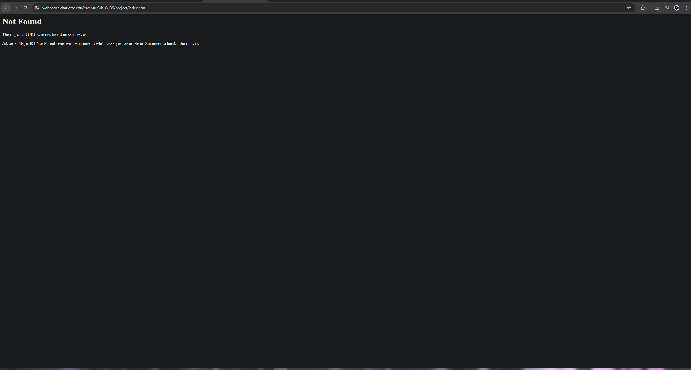

Ventura-Garcia, Mirian
Visit Mirian Ventura-Garcia's Website
- Unable to review design or content because the project site does not exist at the provided URL.
- Attempted access multiple times on different devices and browsers.
- Recommendation: double-check file names (no uppercase letters, no spaces) and folder structure.
- Reminder: Make sure index.html is in the correct public directory and fully published.
- Encouragement: Once uploaded, site could be resubmitted for feedback if needed.
Reviewed by David Mekhaeil on 4/27/25.